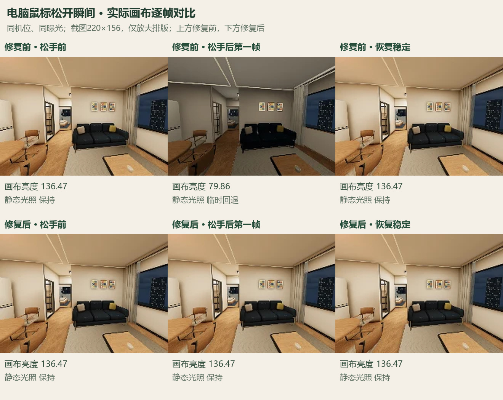

电脑鼠标松开瞬间闪光修复
拖动结束后，浏览器会发出普通click。页面body携带当前data-time，旧事件判断沿祖先查找时误认为点击了时段按钮，导致静态照明暂时回退、房间反射重载。现在只识别真正的时段按钮，拖动、松手和普通画布点击保持当前光照。
未调整四时段曝光、灯光能量、太阳方向或烘焙。清晨/正午/黄昏/夜晚曝光仍为1.00/0.92/1.04/0.86。保存与账号同步仍暂停。

夜晚开灯 · 上修复前，下修复后。真实WebGL画布小图，仅放大与排版，没有后期调亮。松手后第一帧
| 状态 | 修复前最大跳变 | 修复后最大跳变 | 修复后静态光照 |
|---|
| 正午关灯 | 13.075 | 0.00008 | 保持 |
| 正午开灯 | 39.109 | 0.00032 | 保持 |
| 夜晚关灯 | 0.428 | 0.00014 | 保持 |
| 夜晚开灯 | 56.609 | 0.00013 | 保持 |
数值为220×156画布平均亮度的绝对变化（0–255），与同一次操作最后5帧按住不动的均值比较，非照度测量。以实际鼠标按下、拖动、停住、松开产生的pointerup/click为输入，逐帧检查照明启用、合成次数、反射缓存版本/更新次数、曝光和相机位姿。
验证范围
Chrome桌面精细/轻量、缺HDR/depth扩展回退、Windows WebKit桌面，以及触屏/微信UA的真实浏览器点击模拟，共80组四时段×开关灯×毛坯/A操作，记录3342帧；所有组均保持静态光照和缓存版本，曝光固定。时段按钮、灯开关和房门更新仍正常，219张贴图、屋顶和保存暂停保持。模拟不代表真机微信验收。